É necessário usar o MuseScore 3 por enquanto.
Acesse Arquivo → Partes:
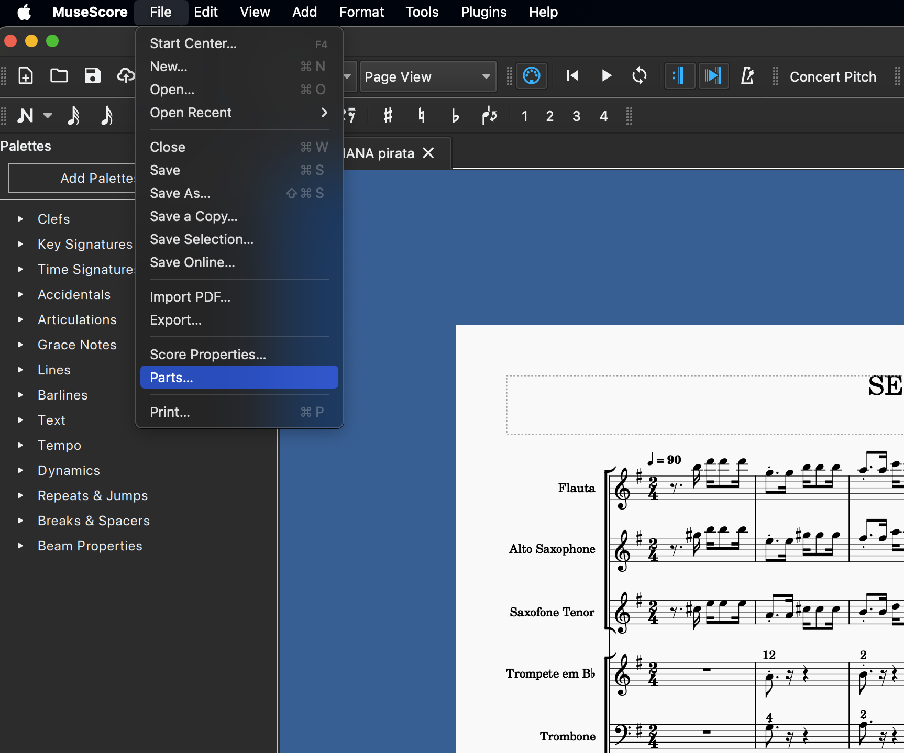Será exibida a seguinte janela:
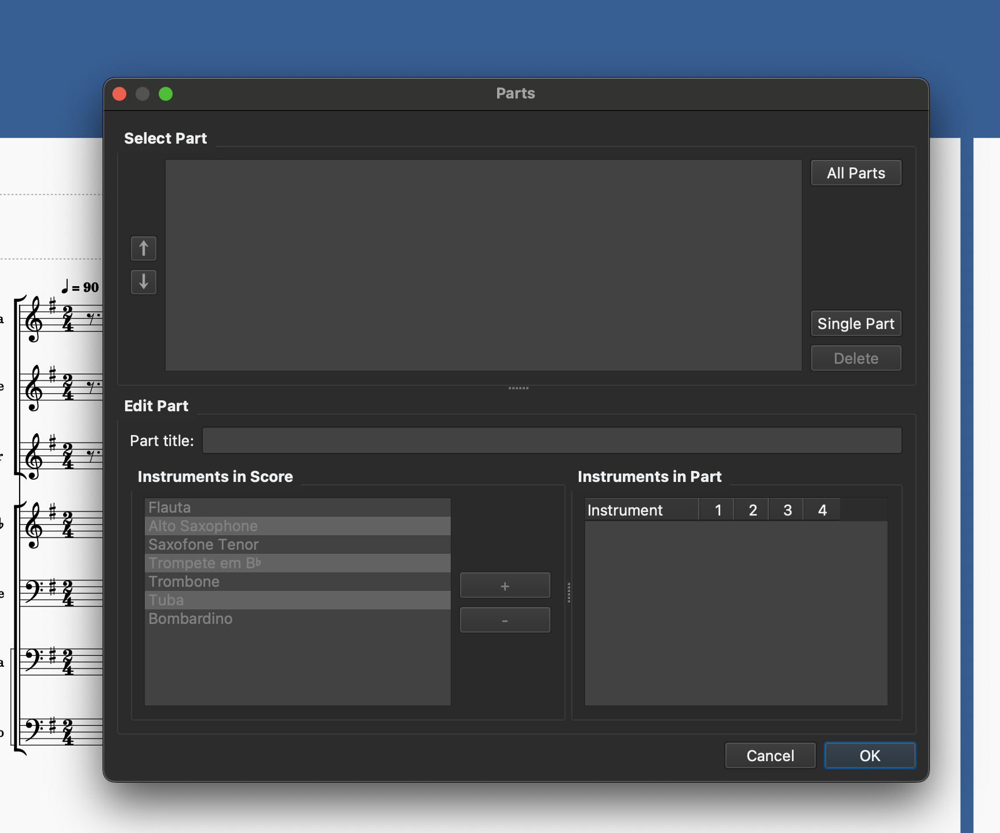Em seguida, clique em Todas as Partes e o nome de todos os instrumentos será exibido. Clique em Ok após isso.
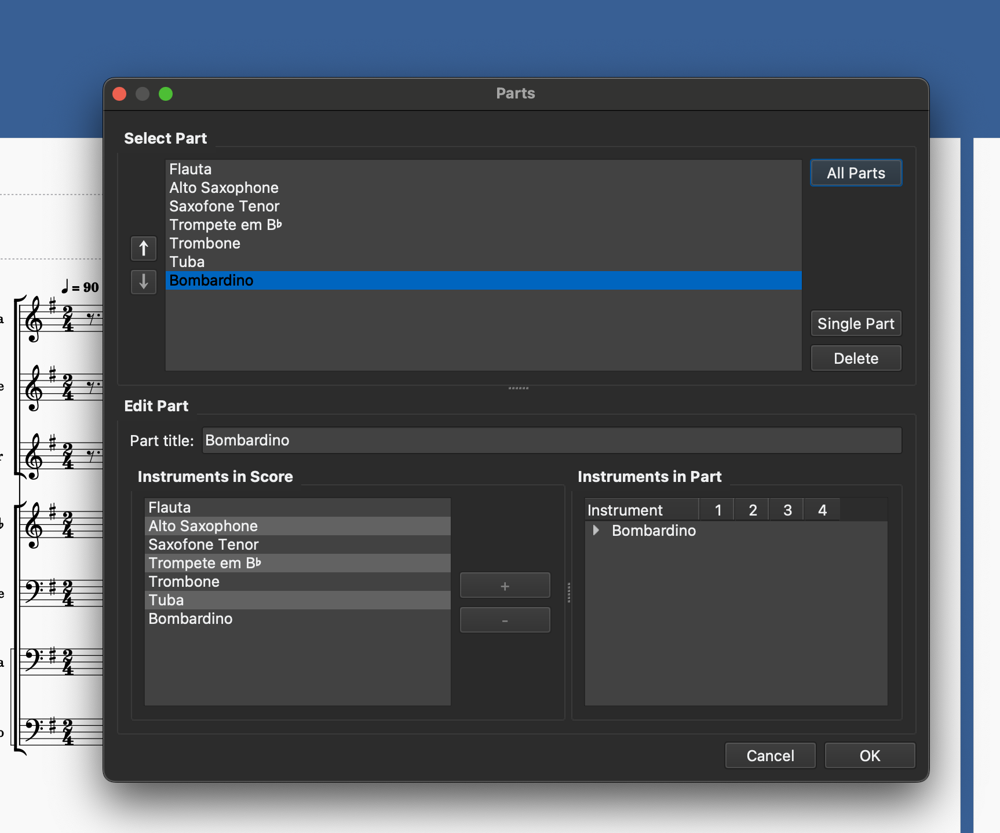Quando a janela Partes fechar, haverá uma aba para cada instrumento:
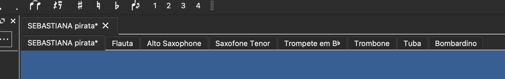Acesse Plugins → Caderninho Formatter:
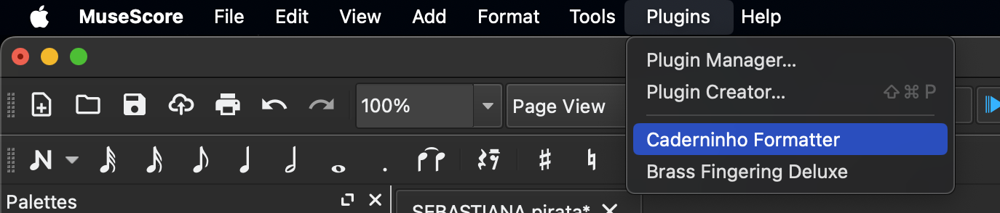Será exibida uma aba com várias opções de formatação. O primeiro passo é remover o título no topo. Clique em Clean text boxes para fazer isso:
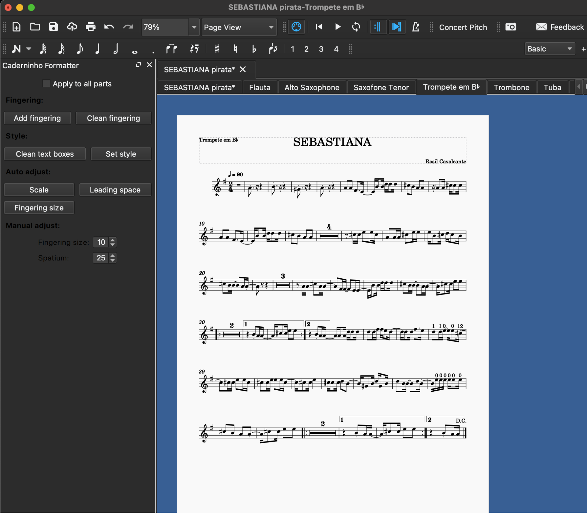Agora tem que redimensionar a página. Clica em Set style:
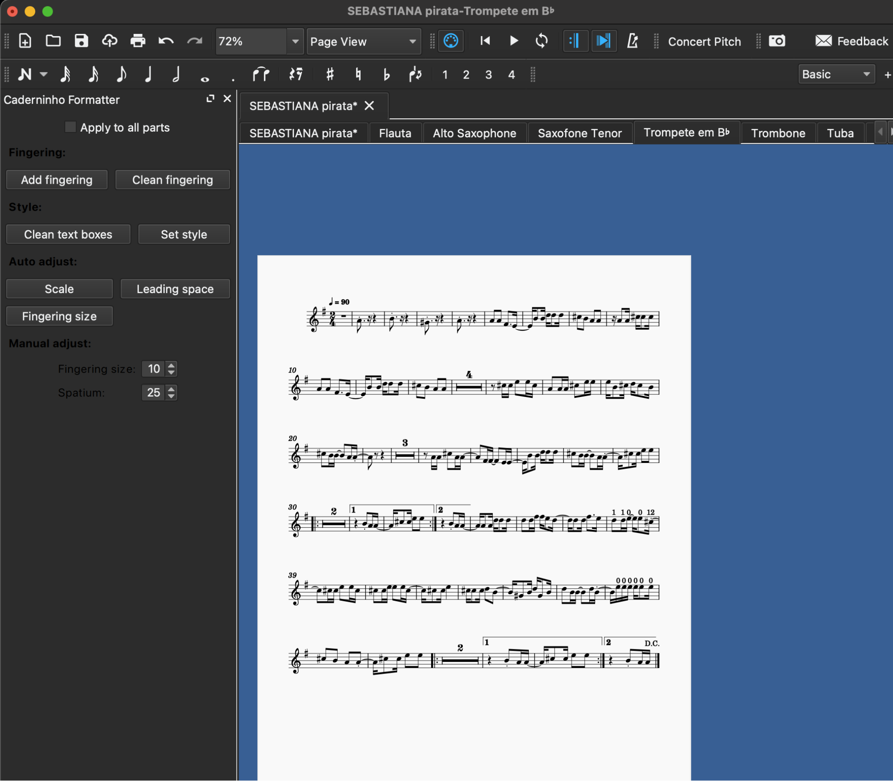O próximo passo é adicionar o pirata. Clica em Add fingering:
Não funcionou, porque o plugin verifica quais instrumentos são usados na partitura para definir o tipo de pirata. Nesse caso, será necessário editar a partitura para definir o instrumento correto. Clique com o botão direito em algum lugar da pauta e depois acesse Propriedades da Parte:
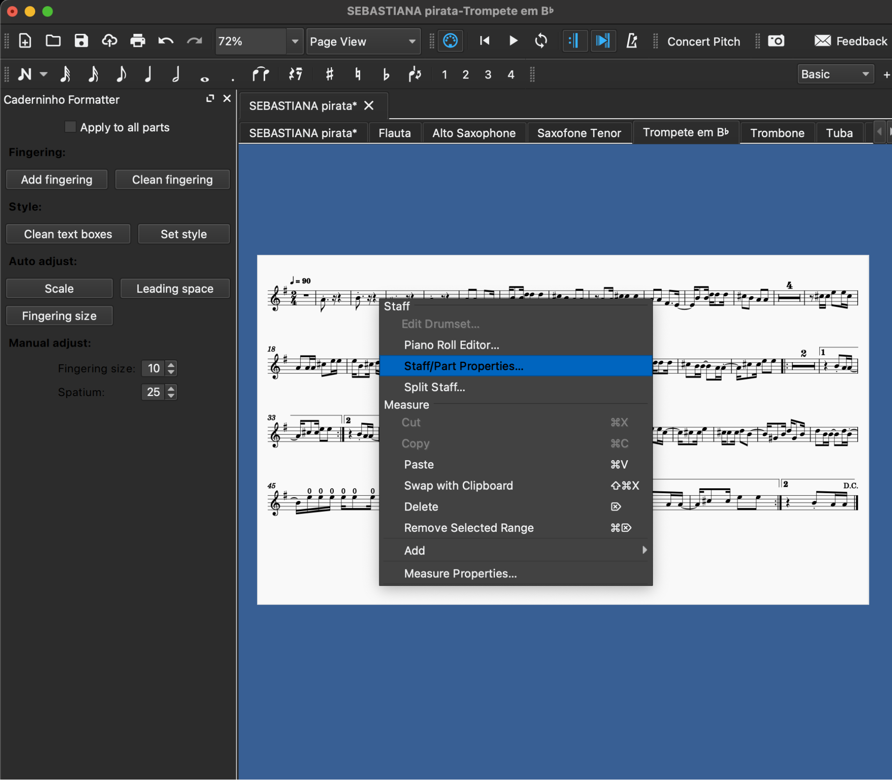Acesse o campo Instrumento e selecione o instrumento correto no menu. Neste exemplo, é Bb Trumpet. Clique em Ok em seguida.
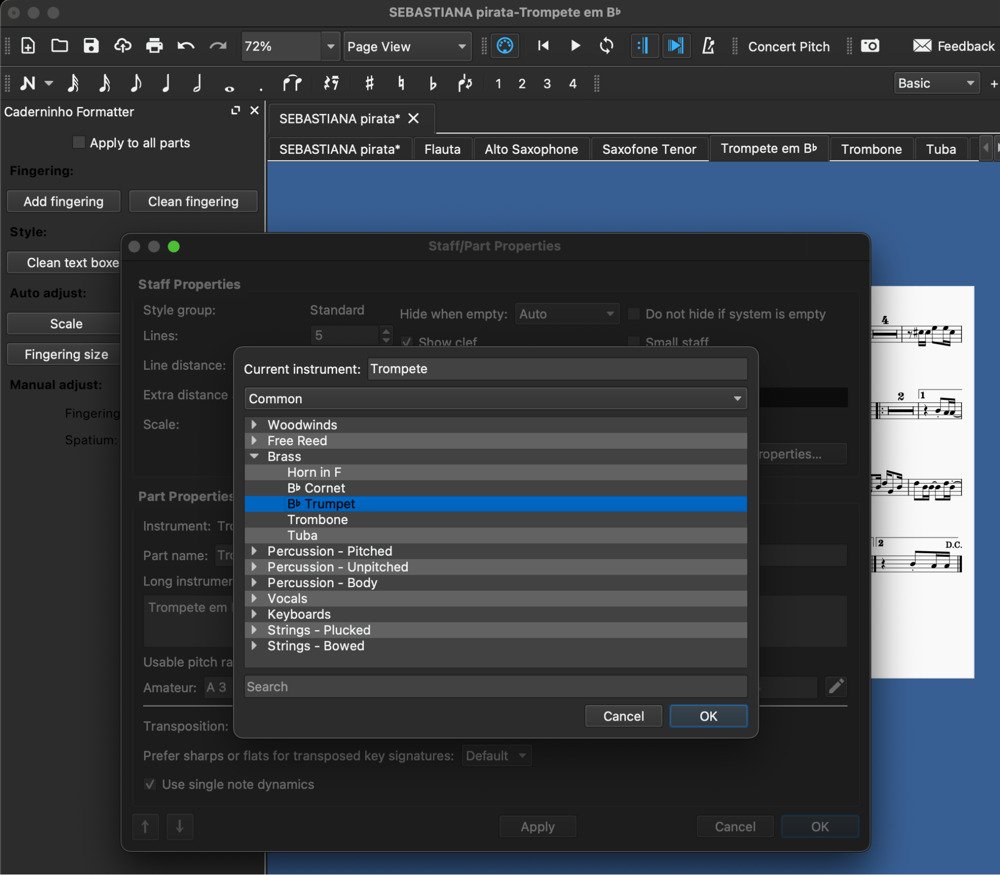Agora que o pirata está no lugar, é necessário aumentar a pauta para o maior tamanho possível. Clique em Scale:
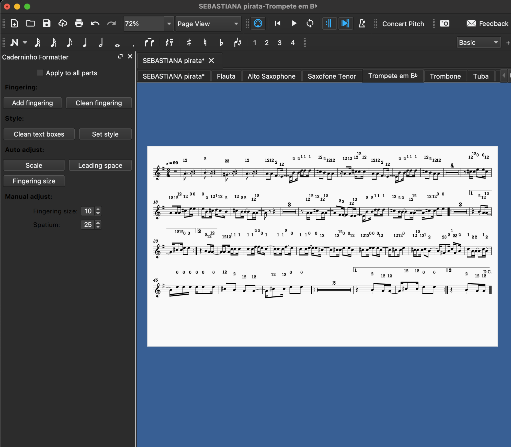Agora é necessário ajustar os tamanhos na seção Manual Adjust para o maior tamanho possível sem quebrar para a próxima página. Cada vez que você modificar o valor, clique na partitura para atualizar a formatação.
Se sobrar um ou dois compassos no fim, tente usar o botão Leading Space para resolver.
A partitura ficou desta forma, e parece estar adequada. Talvez ainda seja necessário ajustar alguns valores de pirata manualmente. Neste exemplo, o compasso 9 tem três notas 12 que deveriam estar na mesma altura, mas estão em alturas diferentes.
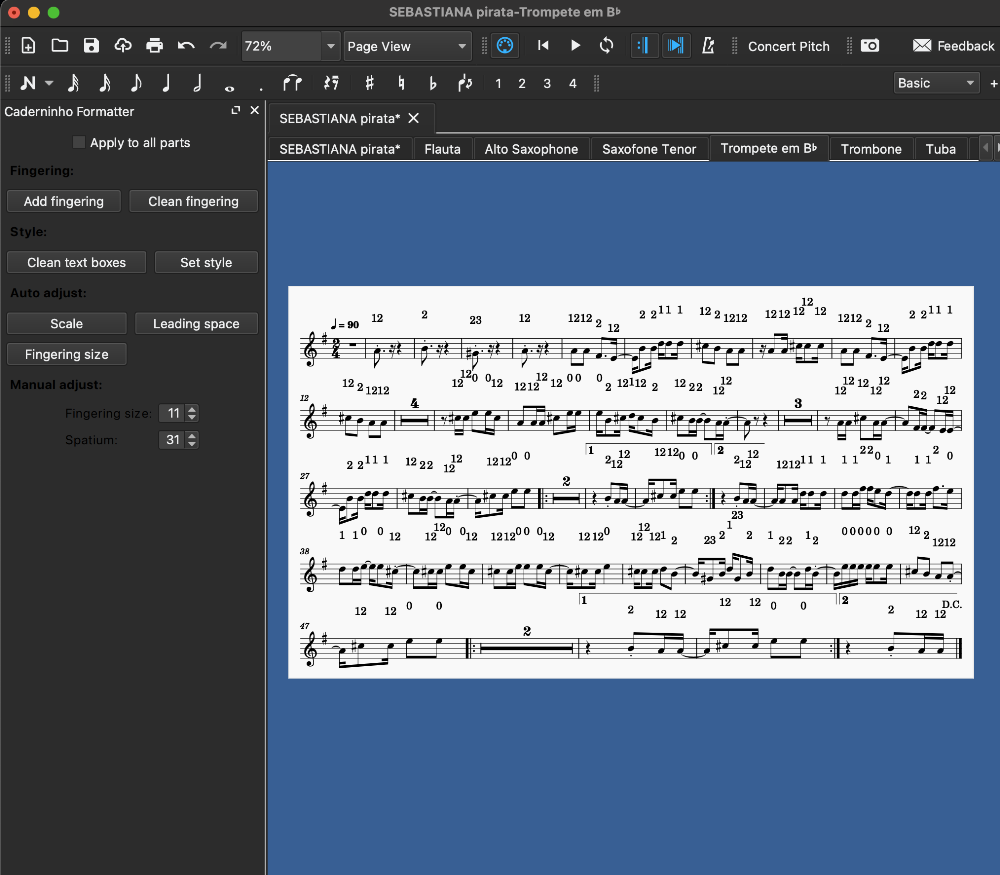Para o sistema cadern.in, apenas o arquivo .mscz já é suficiente.
Caso queira os arquivos em pdf ou svg, Arquivo → Exportar
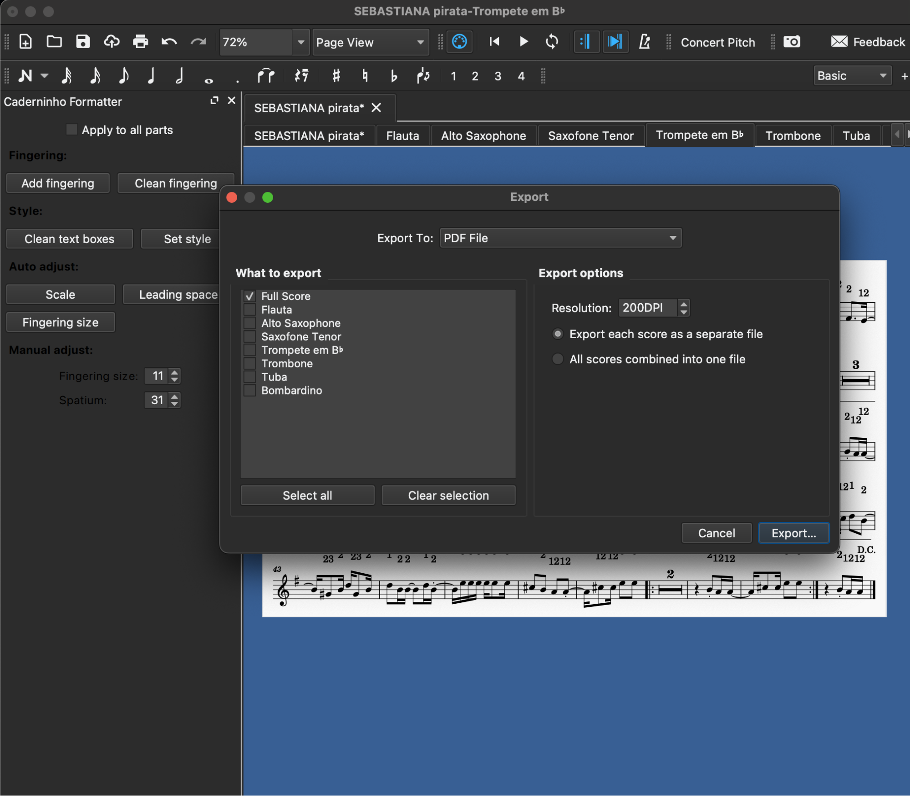